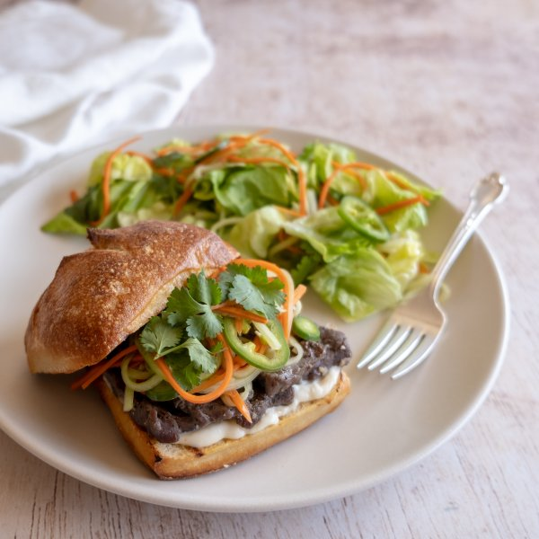

Vietnamese Grilled Steak Banh Mi with Pickled Carrots & Cucumber

Nutrition (per serving)
682.8 kcalCalories
44.1 gProtein
36.9 gCarbs
40.4 gFat
Full nutrition table
| Calories | 682.8 kcal |
| Total fat | 40.4 g |
| Saturated fat | 12.5 g |
| Trans fat | 1.8 g |
| Cholesterol | 112.9 mg |
| Sodium | 342.7 mg |
| Carbohydrates | 36.9 g |
| Fiber | 5.8 g |
| Sugars | 16.9 g |
| Protein | 44.1 g |
| Potassium | 996.7 mg |
| Calcium | 147.3 mg |
| Iron | 5.6 mg |
| Vitamin A | 126.5 IU |
| Vitamin C | 14.2 mg |
| Vitamin D | 8.6 IU |
Cookware
Ingredients
- 1 headbutter (Boston) lettuce
- 2 mediumcarrots
- ½ small bunchcilantro
- 1English cucumber
- 4 clovesgarlic
- 1jalapeño pepper
- 1shallot
- 1 ½ lbstriploin (New York strip) steak
- 4whole grain buns or rolls
- black pepper
- extra virgin olive oil
- fish sauce
- mayonnaise
- pure maple syrup
- rice vinegar
- salt
Steps
- Peel and mince shallot. Peel and mince the garlic.1 shallot
4 cloves garlic - Add shallot, garlic, fish sauce, maple syrup, and pepper to a medium bowl; whisk together.2 tbsp fish sauce
4 tsp pure maple syrup
½ tsp black pepper - Cut the steak into 3-inch sections, then thinly slice each section against the grain into ¼-inch strips; add to the bowl with the marinade. Turn to coat and set aside to marinate.1 ½ lb striploin (New York strip) steak
- Wash and dry the fresh produce.2 medium carrots
1 English cucumber
1 jalapeño pepper
½ small bunch cilantro
1 head butter (Boston) lettuce - Trim off and discard the ends of the carrots and cucumber. Using a julienne (or regular) peeler, peel the carrots and cucumber into thin noodle-like sticks. Transfer the carrots to a medium saucepan and the cucumber to a large bowl.
- Thinly slice the jalapeño into rounds; add to the saucepan with the carrots. (Be careful, with jalapeños, do not touch your eyes and ensure you wash your hands after handling or wear gloves while preparing).
- Add vinegar, maple syrup, and salt to the saucepan with carrots and jalapeño. Bring to a boil over high heat; immediately remove from heat, stir in 4 ice cubes (or ½ cup water) and set aside to cool.½ cup rice vinegar
4 tsp pure maple syrup
1 tsp salt - Heat a grill pan (or skillet) over medium-high heat.
- Halve the lettuce head lengthwise, then chop crosswise into thick, bite-sized, pieces; set aside.
- Coat grill with oil. Working in batches, place steak on the grill and cook until desired doneness, about 1½ minutes per side for medium-rare. Transfer to a plate and loosely cover with foil.4 tsp extra virgin olive oil
- Slice rolls in half. Place on grill, cut side down, and toast until browned, about 2 minutes. Alternatively, you can toast the rolls in a toaster.4 whole grain buns or rolls
- Shave the cilantro leaves off the stems; discard the stems. Add cilantro to the bowl with the cucumber. Reserving the pickling liquid, remove carrots and jalapeño from the saucepan using tongs or a fork, and add them to the bowl; toss to combine.
- To assemble the sandwiches, spread mayonnaise on bottom slices of rolls; top with steak, some of the pickled carrots, cucumber, jalapeño, and cilantro. Close sandwiches with tops of the rolls.¼ cup mayonnaise
- Add lettuce to the bowl with carrots, cucumber, jalapeño, and cilantro; drizzle with ⅓ cup of the reserved pickling liquid, and toss to coat.
- To serve, divide salad and sandwiches between plates. Enjoy!